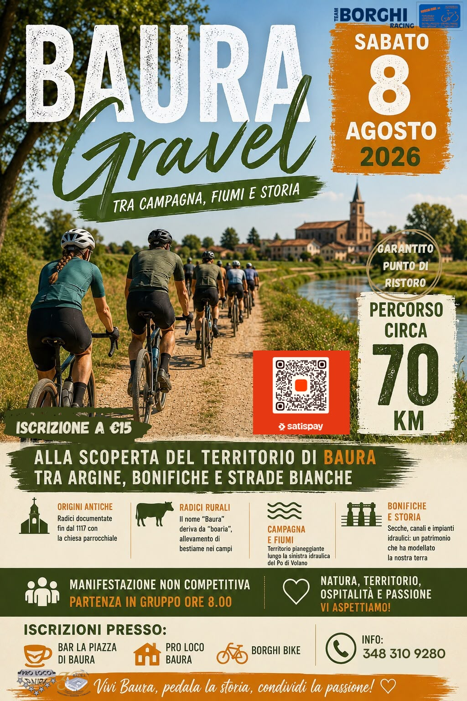

Punto di ristoro
È previsto un punto di ristoro lungo il percorso.

Sabato 8 agosto 2026
Percorso gravel di circa 70 km
È previsto un punto di ristoro lungo il percorso.
Al termine della manifestazione, pasta party per tutti i partecipanti organizzato dalla Pro Loco di Baura.
Partenza: Bar Gelateria La Piazza, Baura di Ferrara
File compatibile con Garmin, Wahoo, Hammerhead, Komoot, Outdooractive e applicazioni analoghe.